FRIGID Chemical EDA
Chemical-class, descriptor, clustering, and low-dimensional-map analysis for the full MSG FRIGID-base NGBoost output. Source run: /home/nikolenko/work/Projects/FRIGID/repro_runs/20260616T203000Z_msg_paper_repro/msg_base_full_ngboost.
Technical summary
The heavy shard tail is chemically structured, not just random noise. The worst eight shards have Exact Top-10 0.72% versus 26.59% in the best eight shards, and the worst group has much higher low-Tanimoto miss share: 70.93% versus 38.36%.
Bad misses are enriched for large, ring-rich, heteroatom-rich, peptidic or glycoside-like molecules. The largest descriptor shifts between low-Tanimoto misses and Exact Top-10 hits are shown below. These are associations, not causal proof, but they define the chemistry surface that should be ablated next.
Cluster analysis separates low-recovery chemical neighborhoods. The worst clusters by Exact Top-10 are 9, 10, 7; they combine low exact recovery with high low-Tanimoto miss share and should be inspected by scaffold.
Which chemical classes fail
The broad classes are heuristic RDKit labels based on rings, amide/ester counts, heteroatoms, oxygen richness, flexibility, and aromaticity. They are meant for debugging, not publication-grade taxonomy.
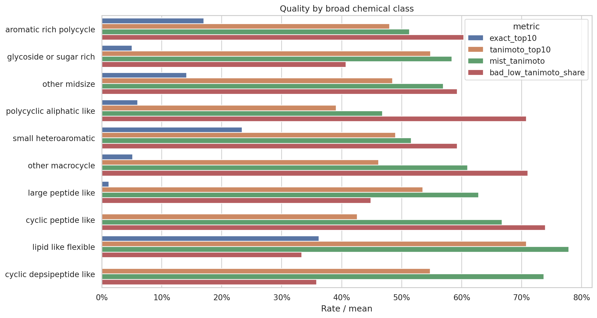
| chem_class | spectra | unique_targets | exact_top1 | exact_top10 | tanimoto_top10 | mist_tanimoto | formula_success | bad_low_tanimoto_share | near_miss_high_tanimoto_share | mol_wt_median | heavy_atoms_median | ring_count_median | max_ring_size_median | amide_count_median | ester_count_median | chiral_centers_median | rotatable_bonds_median |
|---|---|---|---|---|---|---|---|---|---|---|---|---|---|---|---|---|---|
| aromatic_rich_polycycle | 4838.0000 | 1120.0000 | 0.1507 | 0.1703 | 0.4800 | 0.5131 | 0.9613 | 0.6036 | 0.0415 | 440.4630 | 32.0000 | 4.0000 | 6.0000 | 0.0000 | 0.0000 | 0.0000 | 6.0000 |
| glycoside_or_sugar_rich | 3490.0000 | 280.0000 | 0.0418 | 0.0504 | 0.5481 | 0.5839 | 0.8579 | 0.4072 | 0.1095 | 755.1750 | 52.5000 | 5.0000 | 6.0000 | 0.0000 | 1.0000 | 15.0000 | 10.0000 |
| other_midsize | 3255.0000 | 494.0000 | 0.1300 | 0.1413 | 0.4847 | 0.5694 | 0.9210 | 0.5926 | 0.0356 | 503.5150 | 36.0000 | 4.0000 | 6.0000 | 1.0000 | 0.0000 | 1.0000 | 9.0000 |
| polycyclic_aliphatic_like | 2531.0000 | 351.0000 | 0.0486 | 0.0597 | 0.3909 | 0.4681 | 0.8902 | 0.7080 | 0.0174 | 519.5910 | 37.0000 | 5.0000 | 6.0000 | 1.0000 | 1.0000 | 6.0000 | 6.0000 |
| small_heteroaromatic | 1878.0000 | 470.0000 | 0.2103 | 0.2338 | 0.4896 | 0.5159 | 0.9984 | 0.5927 | 0.0133 | 350.4855 | 24.0000 | 3.0000 | 6.0000 | 1.0000 | 0.0000 | 0.0000 | 5.0000 |
| other_macrocycle | 466.0000 | 80.0000 | 0.0343 | 0.0515 | 0.4613 | 0.6101 | 0.6567 | 0.7103 | 0.1438 | 770.8690 | 55.0000 | 6.0000 | 15.0000 | 0.0000 | 2.0000 | 9.0000 | 8.0000 |
| large_peptide_like | 254.0000 | 45.0000 | 0.0118 | 0.0118 | 0.5350 | 0.6284 | 0.8543 | 0.4488 | 0.1811 | 608.7200 | 44.0000 | 4.0000 | 6.0000 | 4.0000 | 0.0000 | 3.0000 | 13.0000 |
| cyclic_peptide_like | 165.0000 | 38.0000 | 0.0000 | 0.0000 | 0.4259 | 0.6674 | 0.7939 | 0.7394 | 0.0061 | 843.9790 | 61.0000 | 4.0000 | 19.0000 | 7.0000 | 0.0000 | 7.0000 | 12.0000 |
| lipid_like_flexible | 105.0000 | 16.0000 | 0.3524 | 0.3619 | 0.7077 | 0.7783 | 0.8476 | 0.3333 | 0.1810 | 444.0800 | 30.0000 | 0.0000 | 0.0000 | 0.0000 | 0.0000 | 0.0000 | 10.0000 |
| cyclic_depsipeptide_like | 95.0000 | 9.0000 | 0.0000 | 0.0000 | 0.5475 | 0.7372 | 0.9684 | 0.3579 | 0.0000 | 783.9630 | 57.0000 | 4.0000 | 18.0000 | 3.0000 | 3.0000 | 6.0000 | 9.0000 |
| small_aliphatic_or_acyclic | 5.0000 | 2.0000 | 0.4000 | 0.4000 | 0.5327 | 0.5771 | 1.0000 | 0.6000 | 0.0000 | 250.3100 | 18.0000 | 0.0000 | 0.0000 | 0.0000 | 0.0000 | 0.0000 | 7.0000 |
What is overrepresented in the bad shard tail
The table compares class mix in the worst eight shards against the best eight shards. Positive worst_minus_best_share means that class is enriched in the heavy tail.
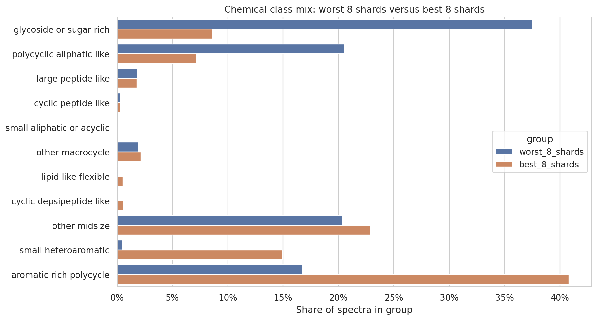
| chem_class | best_8_shards | middle_20_shards | worst_8_shards | worst_minus_best_share |
|---|---|---|---|---|
| glycoside_or_sugar_rich | 0.0863 | 0.1814 | 0.3750 | 0.2887 |
| polycyclic_aliphatic_like | 0.0718 | 0.1558 | 0.2054 | 0.1336 |
| large_peptide_like | 0.0181 | 0.0120 | 0.0184 | 0.0002 |
| cyclic_peptide_like | 0.0031 | 0.0150 | 0.0033 | 0.0002 |
| small_aliphatic_or_acyclic | 0.0008 | 0.0002 | 0.0000 | -0.0008 |
| other_macrocycle | 0.0218 | 0.0329 | 0.0194 | -0.0024 |
| lipid_like_flexible | 0.0054 | 0.0084 | 0.0015 | -0.0039 |
| cyclic_depsipeptide_like | 0.0057 | 0.0076 | 0.0005 | -0.0052 |
| other_midsize | 0.2291 | 0.1690 | 0.2038 | -0.0253 |
| small_heteroaromatic | 0.1496 | 0.1377 | 0.0049 | -0.1447 |
| aromatic_rich_polycycle | 0.4082 | 0.2799 | 0.1678 | -0.2404 |
Descriptor shifts explain the failure surface
Low-Tanimoto misses are compared against spectra where the correct target appears in Top-10. Positive Cohen's d means the descriptor is larger in bad misses. Large absolute shifts are the strongest chemical associations with failure.
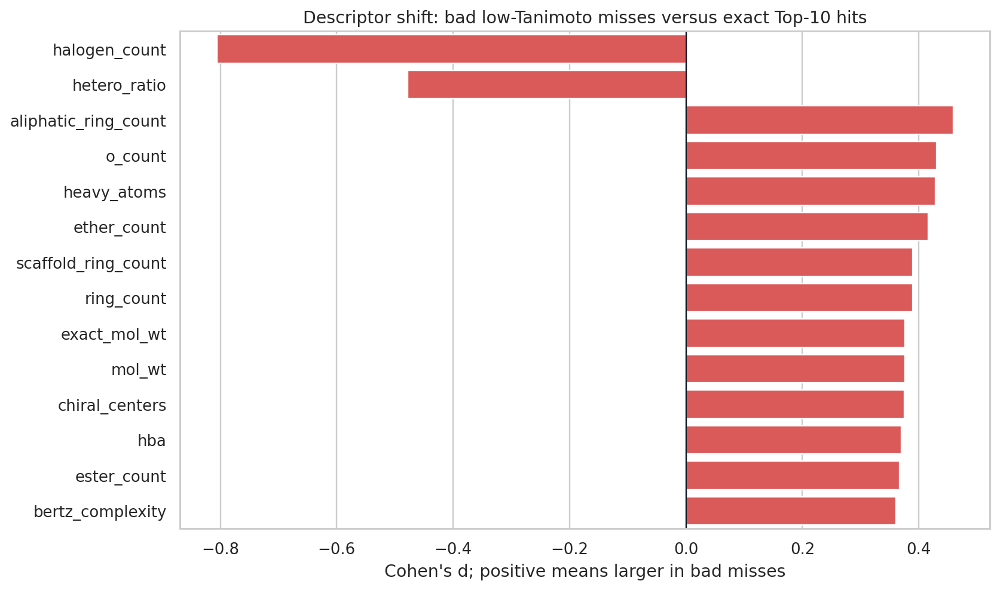
| descriptor | all_median | top10_hit_median | bad_low_tanimoto_median | bad_minus_top10_hit_cohen_d | worst8_median | best8_median | worst8_minus_best8_cohen_d | spearman_with_exact_top10 | spearman_with_tanimoto_top10 | spearman_with_mist_tanimoto |
|---|---|---|---|---|---|---|---|---|---|---|
| halogen_count | 0.0000 | 0.0000 | 0.0000 | -0.8058 | 0.0000 | 0.0000 | -0.7488 | 0.2373 | 0.1734 | 0.1694 |
| hetero_ratio | 0.2667 | 0.2903 | 0.2609 | -0.4782 | 0.2500 | 0.2703 | -0.2346 | 0.1148 | 0.1204 | 0.1030 |
| aliphatic_ring_count | 2.0000 | 1.0000 | 1.0000 | 0.4590 | 3.0000 | 1.0000 | 1.1626 | -0.1776 | 0.0025 | 0.0161 |
| o_count | 6.0000 | 4.0000 | 6.0000 | 0.4307 | 10.0000 | 3.0000 | 1.4016 | -0.1863 | 0.0874 | 0.1049 |
| heavy_atoms | 35.0000 | 32.0000 | 34.0000 | 0.4282 | 47.0000 | 32.0000 | 1.4764 | -0.1847 | 0.1459 | 0.1970 |
| ether_count | 2.0000 | 1.0000 | 1.0000 | 0.4162 | 4.0000 | 1.0000 | 1.1019 | -0.1707 | 0.0457 | 0.0770 |
| scaffold_ring_count | 4.0000 | 4.0000 | 4.0000 | 0.3891 | 5.0000 | 4.0000 | 0.9212 | -0.1314 | -0.0147 | -0.0086 |
| ring_count | 4.0000 | 4.0000 | 4.0000 | 0.3891 | 5.0000 | 4.0000 | 0.9212 | -0.1314 | -0.0147 | -0.0086 |
| exact_mol_wt | 497.1962 | 442.1617 | 480.2512 | 0.3764 | 654.3053 | 444.2274 | 1.4477 | -0.1690 | 0.1698 | 0.2225 |
| mol_wt | 497.6470 | 442.4410 | 480.6370 | 0.3760 | 654.7640 | 444.6230 | 1.4471 | -0.1688 | 0.1696 | 0.2225 |
| chiral_centers | 2.0000 | 0.0000 | 2.0000 | 0.3754 | 8.0000 | 0.0000 | 1.0969 | -0.2001 | 0.0447 | 0.0576 |
| hba | 8.0000 | 6.0000 | 7.0000 | 0.3704 | 11.0000 | 6.0000 | 1.1571 | -0.1695 | 0.1147 | 0.1206 |
| ester_count | 0.0000 | 0.0000 | 0.0000 | 0.3670 | 0.0000 | 0.0000 | 0.4505 | -0.1181 | -0.0882 | -0.0469 |
| bertz_complexity | 1219.2333 | 1110.9121 | 1183.1396 | 0.3610 | 1404.8507 | 1128.5899 | 0.9785 | -0.1355 | 0.0869 | 0.1493 |
| p_count | 0.0000 | 0.0000 | 0.0000 | -0.3541 | 0.0000 | 0.0000 | -0.1924 | 0.0892 | 0.1365 | 0.1623 |
| tpsa | 121.1100 | 91.7600 | 116.4000 | 0.3380 | 148.8200 | 96.5250 | 1.1318 | -0.1656 | 0.1042 | 0.1071 |
| fraction_csp3 | 0.4333 | 0.3571 | 0.4211 | 0.3115 | 0.5429 | 0.3571 | 0.9559 | -0.1489 | 0.0556 | 0.0771 |
| rotatable_bonds | 7.0000 | 6.0000 | 7.0000 | 0.3109 | 10.0000 | 7.0000 | 0.8201 | -0.1480 | 0.1037 | 0.1479 |
Clusters and chemical neighborhoods
Unique target molecules were embedded with Morgan fingerprints, PCA, t-SNE, and KMeans. Cluster labels are not chemistry class labels; they are unsupervised fingerprint neighborhoods used to find concentrated failure regions.
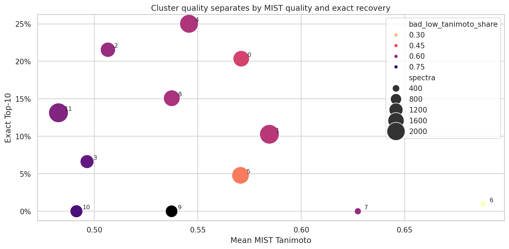
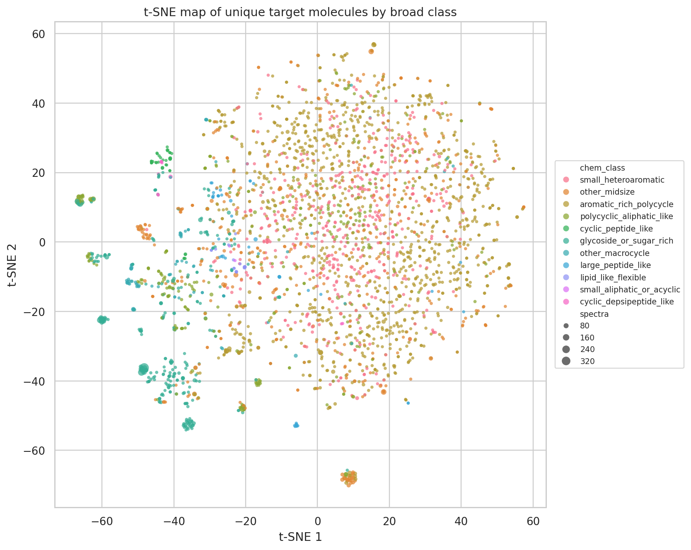
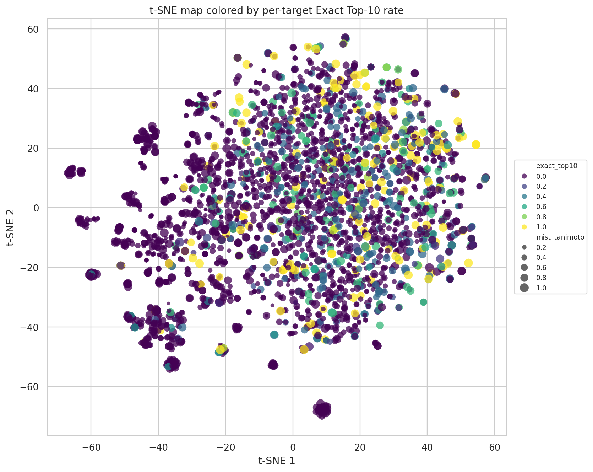
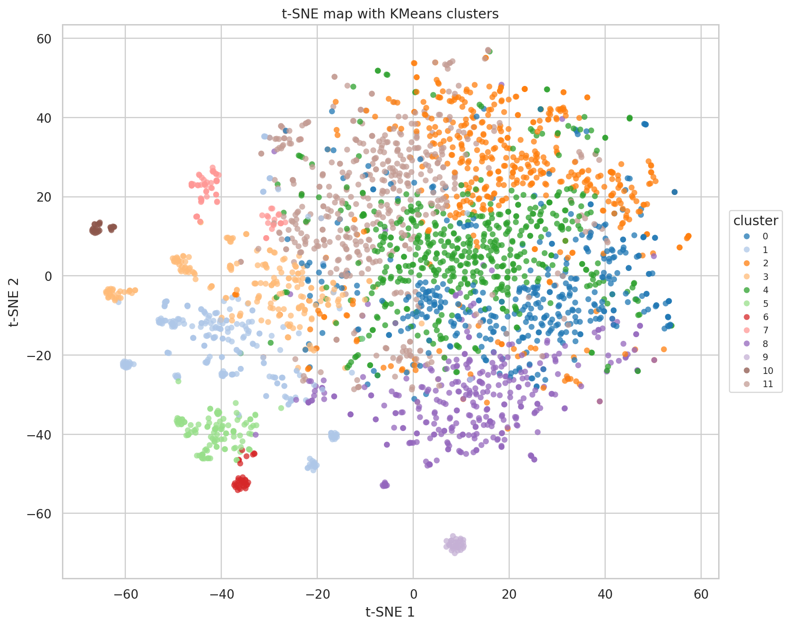
| cluster | spectra | unique_targets | exact_top1 | exact_top10 | tanimoto_top10 | mist_tanimoto | formula_success | bad_low_tanimoto_share | near_miss_high_tanimoto_share | mol_wt_median | heavy_atoms_median | ring_count_median | max_ring_size_median | amide_count_median | ester_count_median | chiral_centers_median | rotatable_bonds_median |
|---|---|---|---|---|---|---|---|---|---|---|---|---|---|---|---|---|---|
| 7.0000 | 363.0000 | 71.0000 | 0.0000 | 0.0000 | 0.4547 | 0.6274 | 0.8650 | 0.5978 | 0.0303 | 783.9630 | 57.0000 | 4.0000 | 18.0000 | 4.0000 | 0.0000 | 6.0000 | 12.0000 |
| 9.0000 | 971.0000 | 30.0000 | 0.0000 | 0.0000 | 0.3586 | 0.5373 | 0.8239 | 0.8847 | 0.0010 | 660.7680 | 48.0000 | 5.0000 | 7.0000 | 2.0000 | 0.0000 | 2.0000 | 12.0000 |
| 10.0000 | 1025.0000 | 24.0000 | 0.0000 | 0.0000 | 0.3531 | 0.4913 | 0.7883 | 0.7239 | 0.0000 | 629.7470 | 45.0000 | 7.0000 | 6.0000 | 0.0000 | 2.0000 | 14.0000 | 9.0000 |
| 6.0000 | 315.0000 | 33.0000 | 0.0063 | 0.0095 | 0.6652 | 0.6880 | 0.7302 | 0.2000 | 0.2508 | 756.7070 | 53.0000 | 5.0000 | 6.0000 | 0.0000 | 1.0000 | 14.0000 | 12.0000 |
| 5.0000 | 1836.0000 | 114.0000 | 0.0376 | 0.0479 | 0.5714 | 0.5706 | 0.8873 | 0.3889 | 0.0512 | 785.0250 | 55.0000 | 6.0000 | 6.0000 | 0.0000 | 0.0000 | 20.0000 | 10.0000 |
| 3.0000 | 1177.0000 | 218.0000 | 0.0637 | 0.0663 | 0.3902 | 0.4964 | 0.9295 | 0.6831 | 0.0374 | 518.5620 | 35.0000 | 2.0000 | 6.0000 | 0.0000 | 0.0000 | 3.0000 | 10.0000 |
| 1.0000 | 2288.0000 | 249.0000 | 0.0835 | 0.1027 | 0.5111 | 0.5846 | 0.8195 | 0.5376 | 0.1285 | 606.7820 | 43.0000 | 4.0000 | 6.0000 | 0.0000 | 1.0000 | 8.0000 | 5.0000 |
| 11.0000 | 2314.0000 | 469.0000 | 0.1128 | 0.1314 | 0.4458 | 0.4826 | 0.9689 | 0.6296 | 0.0402 | 425.4880 | 31.0000 | 4.0000 | 6.0000 | 1.0000 | 0.0000 | 0.0000 | 6.0000 |
| 8.0000 | 1664.0000 | 326.0000 | 0.1376 | 0.1508 | 0.4953 | 0.5374 | 0.9369 | 0.5613 | 0.0595 | 454.6110 | 33.0000 | 4.0000 | 6.0000 | 0.0000 | 0.0000 | 1.0000 | 7.0000 |
| 0.0000 | 1636.0000 | 398.0000 | 0.1870 | 0.2035 | 0.5358 | 0.5710 | 0.9841 | 0.4939 | 0.0507 | 421.3660 | 29.0000 | 3.0000 | 6.0000 | 1.0000 | 0.0000 | 0.0000 | 6.0000 |
| 2.0000 | 1406.0000 | 446.0000 | 0.1885 | 0.2155 | 0.4884 | 0.5065 | 0.9900 | 0.5903 | 0.0228 | 395.5175 | 28.0000 | 4.0000 | 6.0000 | 0.0000 | 0.0000 | 0.0000 | 5.0000 |
| 4.0000 | 2087.0000 | 527.0000 | 0.2281 | 0.2501 | 0.5223 | 0.5458 | 0.9861 | 0.5539 | 0.0340 | 412.4400 | 29.0000 | 4.0000 | 6.0000 | 1.0000 | 0.0000 | 1.0000 | 5.0000 |
Descriptor distributions by outcome
These boxplots show that exact hits and bad misses occupy different chemical regimes. The biggest practical split is not only molecular size; peptide/glycoside-like functionalization, ring structure, and stereochemical burden also matter.
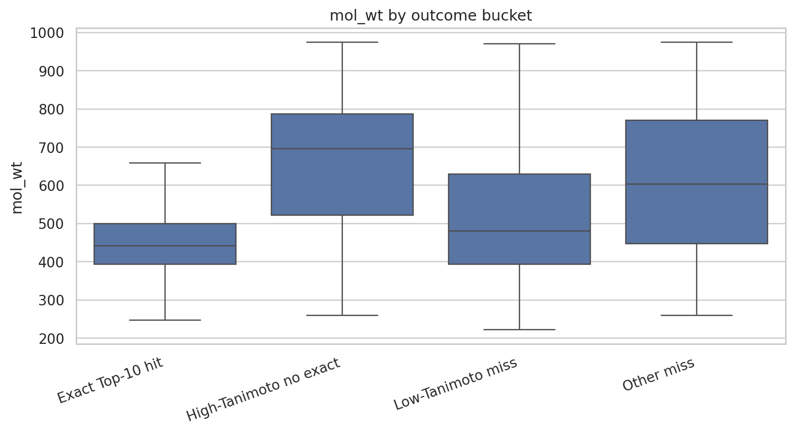
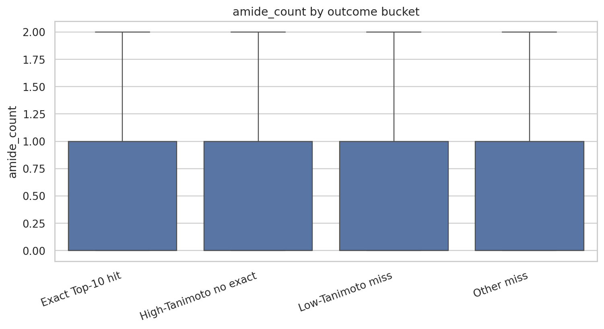
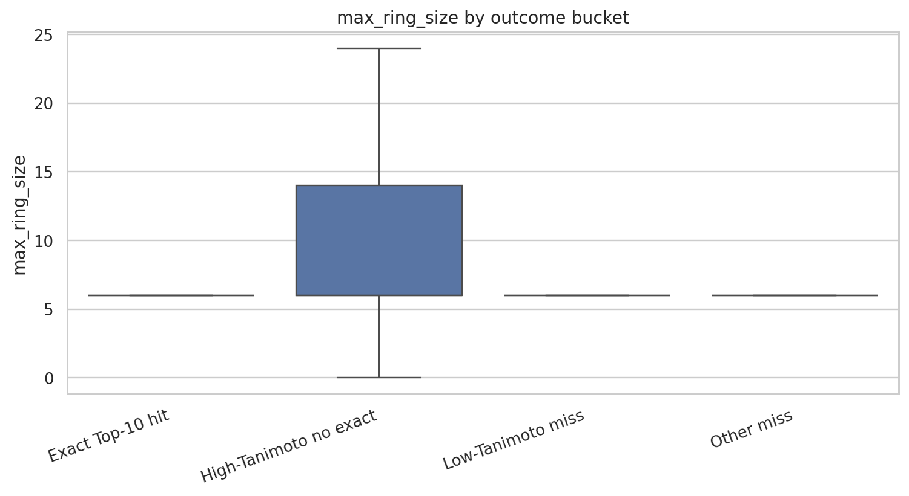
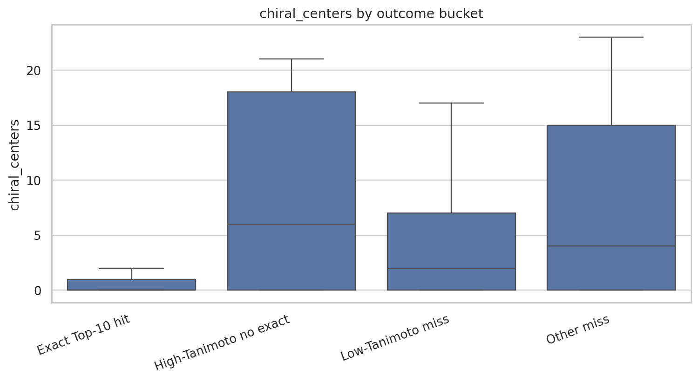
Predictive association model
A random forest over descriptors and broad class labels was trained only as a diagnostic association model for Exact Top-10. Its importance ranking should guide ablations; it should not be read as causal chemistry.
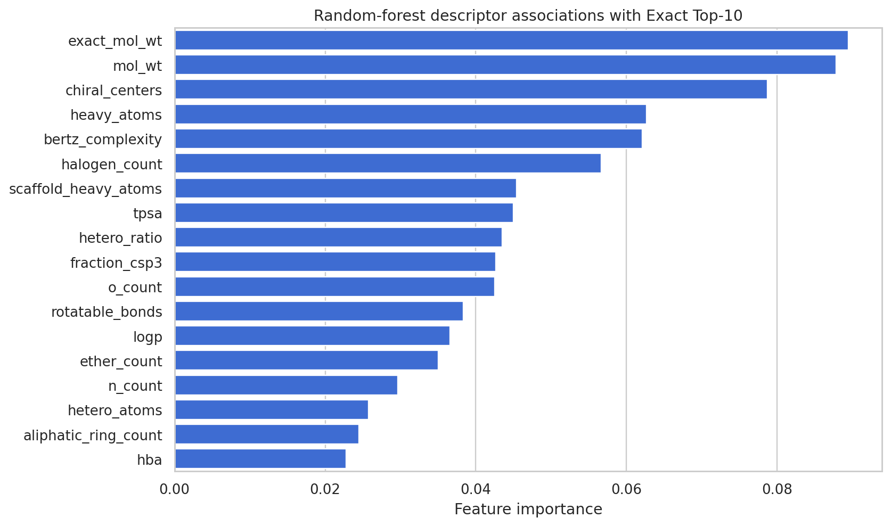
| feature | importance | model_roc_auc | model_average_precision | test_positive_rate |
|---|---|---|---|---|
| exact_mol_wt | 0.0895 | 0.8881 | 0.5344 | 0.1239 |
| mol_wt | 0.0878 | 0.8881 | 0.5344 | 0.1239 |
| chiral_centers | 0.0787 | 0.8881 | 0.5344 | 0.1239 |
| heavy_atoms | 0.0626 | 0.8881 | 0.5344 | 0.1239 |
| bertz_complexity | 0.0621 | 0.8881 | 0.5344 | 0.1239 |
| halogen_count | 0.0566 | 0.8881 | 0.5344 | 0.1239 |
| scaffold_heavy_atoms | 0.0454 | 0.8881 | 0.5344 | 0.1239 |
| tpsa | 0.0450 | 0.8881 | 0.5344 | 0.1239 |
| hetero_ratio | 0.0435 | 0.8881 | 0.5344 | 0.1239 |
| fraction_csp3 | 0.0427 | 0.8881 | 0.5344 | 0.1239 |
| o_count | 0.0425 | 0.8881 | 0.5344 | 0.1239 |
| rotatable_bonds | 0.0384 | 0.8881 | 0.5344 | 0.1239 |
| logp | 0.0366 | 0.8881 | 0.5344 | 0.1239 |
| ether_count | 0.0350 | 0.8881 | 0.5344 | 0.1239 |
| n_count | 0.0297 | 0.8881 | 0.5344 | 0.1239 |
| hetero_atoms | 0.0258 | 0.8881 | 0.5344 | 0.1239 |
| aliphatic_ring_count | 0.0245 | 0.8881 | 0.5344 | 0.1239 |
| hba | 0.0228 | 0.8881 | 0.5344 | 0.1239 |
| hbd | 0.0185 | 0.8881 | 0.5344 | 0.1239 |
| aromatic_ring_count | 0.0144 | 0.8881 | 0.5344 | 0.1239 |
Scaffolds and cases to inspect manually
The supporting tables list top Murcko scaffolds overall and within each fingerprint cluster, plus concrete examples from the worst shard tail, high-MIST no-exact cases, Top-10 hits, and high-Tanimoto near misses.
Top scaffold summary
| murcko_scaffold | spectra | unique_targets | exact_top10 | tanimoto_top10 | mist_tanimoto | chem_class | example_smiles |
|---|---|---|---|---|---|---|---|
| O=C(OC1C2CCC3C4CC5C6CCCC5(C(C2)C31)C4NC6)c1ccccc1 | 455.0000 | 8.0000 | 0.0000 | 0.3115 | 0.4104 | polycyclic_aliphatic_like | CCN1CC2(CCC(C34C2C(C(C31)C5(CC(C6(CC4C5C6OC(=O)C7=CC=C(C=C7)OC)O)OC)OC(=O)C)OC)OC)COC |
| C1CC[C@H](O[C@@H]2CCCO[C@H]2O[C@H]2CCC3C4CC[C@@H]5CCCC5C4CC[C@H]3C2)OC1 | 383.0000 | 1.0000 | 0.0000 | 0.7333 | 0.7006 | glycoside_or_sugar_rich | CC(=CCCC(C)([C@H]1CC[C@@]2([C@@H]1[C@@H](CC3[C@]2(CC[C@@H]4[C@@]3(CC[C@@H](C4(C)C)O[C@H]5[C@@H]([C@H]([C@@H]([C@H](O5)CO)O)O)O[C@H]6[C@@H]([C@H]([C@@H]([C@H](O6)CO)O)O)O)C)C)O)C)O)C |
| C1CCC(OC2CCCOC2OC2CC3C4CCCC4CCC3C3CCCCC23)OC1 | 339.0000 | 4.0000 | 0.0000 | 0.4801 | 0.5258 | glycoside_or_sugar_rich | CCC(=CCCC(C)(C1CCC2(C1C(CC3C2CC(C4C3(CCC(C4(C)C)O)C)OC5C(C(C(C(O5)CO)O)O)OC6C(C(C(C(O6)C)O)O)O)O)C)O)C |
| O=C1C=CC2C(=O)C3=Cc4ccccc4CC3CC2C1 | 303.0000 | 4.0000 | 0.0858 | 0.4786 | 0.4569 | polycyclic_aliphatic_like | CN(C)C1C2CC3C(C4=C(C=CC(=C4C(=C3C(=O)C2(C(=C(C1=O)C(=O)N)O)O)O)O)Cl)O |
| O=C1CCCCOC(=O)C[C@@H](O[C@H]2CCCCO2)C[C@@H](O[C@H]2CCCCO2)CCC1 | 230.0000 | 5.0000 | 0.2522 | 0.8258 | 0.8096 | glycoside_or_sugar_rich | CC[C@@H]1[C@@]([C@@H]([C@H](C(=O)[C@@H](C[C@@]([C@@H]([C@H]([C@@H]([C@H](C(=O)O1)C)O[C@H]2C[C@@]([C@H]([C@@H](O2)C)O)(C)OC)C)O[C@H]3[C@@H]([C@H](C[C@H](O3)C)N(C)C)O)(C)O)C)C)O)(C)O |
| NaN | 185.0000 | 31.0000 | 0.2162 | 0.6029 | 0.6931 | lipid_like_flexible | C(CCl)OP(=O)(OCCCl)OCC(COP(=O)(OCCCl)OCCCl)(CCl)CCl |
| O=C(O[C@H]1C2CCC3[C@H]4C[C@@H]5C6CCC[C@@]5(C4NC6)[C@H](C2)[C@@H]31)c1ccccc1 | 172.0000 | 4.0000 | 0.0000 | 0.4642 | 0.6701 | glycoside_or_sugar_rich | CCN1C[C@@]2([C@@H](C[C@@H]([C@@]34[C@@H]2[C@H]([C@@H](C31)[C@@]5([C@@H]6[C@H]4C[C@@]([C@@H]6OC(=O)C7=CC=CC=C7)([C@H]([C@@H]5O)OC)O)OC(=O)C)OC)OC)O)COC |
| c1ccc(Oc2cc(Oc3ccccc3)ncn2)cc1 | 149.0000 | 2.0000 | 0.0403 | 0.2357 | 0.2417 | aromatic_rich_polycycle | CO/C=C(\C1=CC=CC=C1OC2=NC=NC(=C2)OC3=CC=CC=C3C#N)/C(=O)O |
| O=C(O[C@@H]1Cc2ccccc2O[C@@H]1c1ccccc1)c1ccccc1 | 148.0000 | 2.0000 | 0.5068 | 0.8373 | 0.7856 | aromatic_rich_polycycle | C1[C@H]([C@H](OC2=CC(=CC(=C21)O)O)C3=CC(=C(C(=C3)O)O)O)OC(=O)C4=CC(=C(C(=C4)O)O)O |
| N=C1CCCCOC(=O)C[C@@H](O[C@H]2CCCCO2)C[C@@H](O[C@H]2CCCCO2)CCC1 | 142.0000 | 2.0000 | 0.0070 | 0.7722 | 0.9502 | glycoside_or_sugar_rich | CC[C@@H]1[C@@]([C@@H]([C@H](C(=NOCOCCOC)[C@@H](C[C@@]([C@@H]([C@H]([C@@H]([C@H](C(=O)O1)C)O[C@H]2C[C@@]([C@H]([C@@H](O2)C)O)(C)OC)C)O[C@H]3[C@@H]([C@H](C[C@H](O3)C)N(C)C)O)(C)O)C)C)O)(C)O |
| c1ccc(CCCCNCCc2ccccc2)cc1 | 121.0000 | 3.0000 | 0.4050 | 0.8011 | 0.7849 | other_midsize | CC(C)C(CCCN(C)CCC1=CC(=C(C=C1)OC)OC)(C#N)C2=CC(=C(C=C2)OC)OC |
| O=C(C=Cc1ccccc1)OC1C(COC2CCCCO2)OC(OCCc2ccccc2)CC1OC1CCCCO1 | 110.0000 | 5.0000 | 0.0000 | 0.7356 | 0.7711 | glycoside_or_sugar_rich | CC1C(C(C(C(O1)OC2C(C(OC(C2OC(=O)C=CC3=CC(=C(C=C3)O)OC)COC4C(C(C(CO4)O)O)O)OCCC5=CC(=C(C=C5)OC)O)O)O)O)O |
| c1ccccc1 | 110.0000 | 16.0000 | 0.0818 | 0.3158 | 0.3896 | glycoside_or_sugar_rich | CCN(CC)C(=O)C(=CC1=CC(=C(C(=C1)O)O)[N+](=O)[O-])C#N |
| C1CC[C@H](OC[C@H]2CCC3C4C[C@H](O[C@H]5CCCCO5)C5CCCCC5C4CC[C@@H]32)OC1 | 109.0000 | 1.0000 | 0.0367 | 0.5865 | 0.4625 | glycoside_or_sugar_rich | CC(=CCC[C@@](C)([C@H]1CC[C@@]2([C@@H]1[C@@H](CC3[C@]2(C[C@@H](C4[C@@]3(CC[C@@H](C4(C)C)O)C)O[C@H]5[C@@H]([C@H]([C@@H]([C@H](O5)CO)O)O)O)C)O)C)O[C@H]6[C@@H]([C@H]([C@@H]([C@H](O6)CO)O)O)O)C |
| O=C1CCCC(=O)C1C(=O)c1ccccc1 | 106.0000 | 3.0000 | 0.8774 | 0.9015 | 0.8685 | small_heteroaromatic | CS(=O)(=O)C1=CC(=C(C=C1)C(=O)C2C(=O)CCCC2=O)[N+](=O)[O-] |
| O=C(C=Cc1ccccc1)OC1CCCOC1c1cccc2c(=O)ccoc12 | 105.0000 | 2.0000 | 0.0286 | 0.3377 | 0.3865 | other_midsize | CC1=CC(=C(C2=C1C(=O)C=C(O2)CC(C)O)C3C(C(C(C(O3)CO)O)O)OC(=O)C=CC4=CC=C(C=C4)O)OC |
| O=C1N(Cc2ccc(-c3ccccc3-c3nn[nH]n3)cc2)C=NC12CCCC2 | 101.0000 | 1.0000 | 0.0792 | 0.6038 | 0.6165 | other_midsize | CCCCC1=NC2(CCCC2)C(=O)N1CC3=CC=C(C=C3)C4=CC=CC=C4C5=NNN=N5 |
| O=C(CCCc1ccccc1)N1CCn2cnnc2C1 | 97.0000 | 3.0000 | 0.5567 | 0.7483 | 0.6849 | small_heteroaromatic | C1CN2C(=NN=C2C(F)(F)F)CN1C(=O)C[C@@H](CC3=CC(=C(C=C3F)F)F)N |
Case examples
| example_type | shard | spec_name | chem_class | cluster | exact_match_top10 | tanimoto_top10 | mist_tanimoto | formula_success | mol_wt | heavy_atoms | ring_count | max_ring_size | amide_count | ester_count | chiral_centers | target_smiles | proposal_smiles | top_prediction_smiles |
|---|---|---|---|---|---|---|---|---|---|---|---|---|---|---|---|---|---|---|
| worst_shard_low_tanimoto | shard_034 | MassSpecGymID0397891 | polycyclic_aliphatic_like | 1.0000 | 0.0000 | 0.0562 | 0.0455 | True | 415.6660 | 30.0000 | 4.0000 | 6.0000 | 0.0000 | 0.0000 | 8.0000 | C[C@]12CC[C@H]3[C@]([C@@H]1CC[C@@]4([C@@H]2CCC(=C)[C@H]4CN=C(N)N)C)([C@H](CCC3(C)C)O)C | CCCCCC=CCC=CCCCCCCCCCCC(=O)NCCc1ncc[nH]1 | ['CCCCCC=CCC=CCCCCCCCCCCC(=O)NCCc1ncc[nH]1', 'CCCCCCCCC=CCC=CCCCCCCCC(=O)NCCc1ncc[nH]1', 'CCCCCCC=CCC=CCCCCCCCCCC(=O)NCCc1ncc[nH]1', 'CCCCCCCCC=CCC=CCCCCCCC(=O)NCCc1ncc[nH]1', 'CCCCCC=CCC=CCCCCCCCCCC(=O)NCCc1ncc[nH]1'] |
| worst_shard_low_tanimoto | shard_034 | MassSpecGymID0397361 | small_heteroaromatic | 2.0000 | 0.0000 | 0.0641 | 0.0704 | True | 342.3350 | 21.0000 | 1.0000 | 5.0000 | 0.0000 | 0.0000 | 0.0000 | C#CCCCCCC1=NC(=CS1)CC/C(=C\Cl)/C/C=C/Cl | Cc1sc2cc(Cl)cc(Cl)c2c1C1(C)CCCC(N)CC1 | ['Cc1sc2cc(Cl)cc(Cl)c2c1C1(C)CCCC(N)CC1', 'CC(C=N)C12CCC(c3ccc(Cl)cc3Cl)(CCS1)CC2', 'CCC1=C(C(C)C)N2SC(C)(c3ccc(Cl)cc3Cl)C12C', 'CC1=CCC(Cl)(C(C)C2(C)CCc3cc(Cl)ccc3S2)N1', 'CC(c1cc2cc(Cl)c(Cl)cc2s1)C1CCC(C)(N)CC1'] |
| worst_shard_low_tanimoto | shard_032 | MassSpecGymID0379823 | other_midsize | 3.0000 | 0.0000 | 0.0729 | 0.1279 | True | 925.2200 | 68.0000 | 6.0000 | 6.0000 | 0.0000 | 0.0000 | 0.0000 | CC1=CC2=C(C(=CNC3=CC(=C(C(=C3)C(C)(C)C)O)C(C)(C)C)C(=O)C(=C2C(C)C)O)C(=C1C4=C(C5=C(C=C4C)C(=C(C(=O)C5=CNC6=CC(=C(C(=C6)C(C)(C)C)O)C(C)(C)C)O)C(C)C)O)O | CCCCCCCCOc1ccc(C(=O)Oc2ccc(C(=O)O)cc2)cc1 | ['CCCCCCCCOc1ccc(C(=O)Oc2ccc(C(=O)O)cc2)cc1', 'CCCCCCCCCCOc1ccc(C(=O)Oc2ccc(C(=O)O)cc2)cc1', 'CCCCCCCCCCCOc1ccc(C(=O)Oc2ccc(C(=O)O)cc2)cc1', 'CCCCCCCCCOc1ccc(C(=O)Oc2ccc(C(=O)O)cc2)cc1', 'CCCCCCCCCCCCOc1ccc(C(=O)Oc2ccc(C(=O)O)cc2)cc1'] |
| worst_shard_low_tanimoto | shard_032 | MassSpecGymID0379825 | other_midsize | 3.0000 | 0.0000 | 0.0776 | 0.1205 | True | 925.2200 | 68.0000 | 6.0000 | 6.0000 | 0.0000 | 0.0000 | 0.0000 | CC1=CC2=C(C(=CNC3=CC(=C(C(=C3)C(C)(C)C)O)C(C)(C)C)C(=O)C(=C2C(C)C)O)C(=C1C4=C(C5=C(C=C4C)C(=C(C(=O)C5=CNC6=CC(=C(C(=C6)C(C)(C)C)O)C(C)(C)C)O)C(C)C)O)O | CCCCCCCCOc1ccc(OCCCCCC)cc1OCc1ccccc1 | ['CCCCCCCCOc1ccc(OCCCCCC)cc1OCc1ccccc1', 'CCCCCCCOc1ccc(OCc2ccccc2)cc1', 'CCCCCCCCOc1ccc(OCc2ccccc2)cc1', 'CCCCCCCCCCOc1ccc(OCc2ccccc2)cc1OCCCCCCCCCC', 'CCCCCCCCCCOc1cc(O)c(OC/C=N/CCOc2ccccc2)cc1OCc1ccccc1'] |
| worst_shard_low_tanimoto | shard_033 | MassSpecGymID0385301 | other_midsize | 8.0000 | 0.0000 | 0.0916 | 0.1045 | True | 825.0700 | 58.0000 | 8.0000 | 6.0000 | 0.0000 | 0.0000 | 4.0000 | COC1=C(C=C(C=C1)C(C2=C(N(C(=S)NC2=O)CCC3=CCCCC3)O)C4=C(N(C(=S)NC4=O)CCC5=CCCCC5)[O-])C[NH+]6CC7CC(C6)C8=CC=CC(=O)N8C7 | CCCCCCN(CC)CCN/C=C1/C(=O)c2ccc(-c3nc4ccccc4s3)cc2C1=O | ['CCCCCCN(CC)CCN/C=C1/C(=O)c2ccc(-c3nc4ccccc4s3)cc2C1=O', 'CCN(CC)CCCN1/C(=C\\NCCN(CC)CC)CCC(=O)c2ccc(-c3ccc4sc(-c5ccc6c(c5)C(=O)C(C/C=N/OS(C)(=O)=O)C6=O)nc4c3)cc21', 'CCCCCCNC=C1C(=O)C(=O)c2ccc(-c3nc4cc(-c5ccc6c(c5)C(=O)C(=NN(CCN(CC)CC)C(=O)OCN(CC)CC)S6)ccc4s3)cc2C1=O', 'CCN(CC)CCCc1cnc(-c2ccc3c(c2)C(=O)c2sc(C(=O)NOC(=O)N(CC)CC)cc2-3)s1', 'CCCCCCCN(CC)CCN=c1c(=O)c2ccc(-c3ccc4c(c3)C(=CS(C)(=O)=O)C4=O)cc2c1=O'] |
| worst_shard_low_tanimoto | shard_034 | MassSpecGymID0396130 | lipid_like_flexible | 3.0000 | 0.0000 | 0.0930 | 0.1692 | True | 401.5910 | 29.0000 | 0.0000 | 0.0000 | 1.0000 | 0.0000 | 3.0000 | C[C@@H](CO)NC(=O)/C(=C/C=C/C=C\C=C\C(=C\[C@@H](C)[C@H](/C(=C/C(C)C)/C)O)\C)/C | CC1=CN(C(C)C)[C@@]2(CCC[C@@]3(C=O)CC[C@@H]3C)C(=O)[C@@H](C)CC[C@@]3(C)CO[C@]132 | ['CC1=CN(C(C)C)[C@@]2(CCC[C@@]3(C=O)CC[C@@H]3C)C(=O)[C@@H](C)CC[C@@]3(C)CO[C@]132', 'CC(=C[C@]1(C)OC(=O)CC[C@@H]1C)N[C@@H]1C[C@@H]2CC[C@]3(CCCC(O)=C3C[C@H]2C)C1', 'CNCC1(C(C)=O)CCC23CCCC2(CCCCC2(C)CC(=CC(=O)O1)C2)CC3', 'CC(C)CNC(C[C@H](C)C=C1C[C@@H](C)C(=O)[C@H](C)C1=O)=C1CC[C@H](C)[C@@H](C)C1=O', 'C=C1CC(N(CC2(C)C(=O)CCCCC2C)C2(C)C=C(O)CC2=C)CCC(C)O1'] |
| worst_shard_low_tanimoto | shard_034 | MassSpecGymID0398216 | small_heteroaromatic | 8.0000 | 0.0000 | 0.0941 | 0.2000 | True | 301.3940 | 22.0000 | 2.0000 | 6.0000 | 0.0000 | 0.0000 | 0.0000 | CCCCCN=C(N)NN=CC1=CNC2=C1C=C(C=C2)OC | CC(C)c1cccnc1N1CCN(Cc2cc(=O)[nH][nH]2)CC1 | ['CC(C)c1cccnc1N1CCN(Cc2cc(=O)[nH][nH]2)CC1', 'CC(C)c1cnc(N2CCN(Cc3cc(=O)cc[nH]3)CC2)[nH]1', 'CC(C)c1ccc(N2CCN(Cc3n[nH]c(=O)[nH]3)CC2)cc1', 'CCc1ccc(N2CCN(Cc3nc(=O)cc(C)[nH]3)CC2)[nH]1', 'CC(C)N1C(=O)c2cc(N3CCN(CN4CC4)CC3)cnc21'] |
| worst_shard_low_tanimoto | shard_034 | MassSpecGymID0396615 | glycoside_or_sugar_rich | 5.0000 | 0.0000 | 0.0948 | 0.0909 | True | 798.9320 | 56.0000 | 2.0000 | 6.0000 | 5.0000 | 0.0000 | 5.0000 | C1=CC=C(C=C1)CC(=O)N(CCCCCNC(=O)CCC(=O)N(CCCCCNC(=O)CCC(=O)N(CCCCCN)OC2C(C(C(OC2O)CO)O)O)O)O | CC(=O)NC1CCCCOC(=O)C2CCC(C)C2N(O)CCCC(N)C(=O)C(N)CCCC(N)C(=O)OCCC(C)=CC(=O)C=C1O | ['CC(=O)NC1CCCCOC(=O)C2CCC(C)C2N(O)CCCC(N)C(=O)C(N)CCCC(N)C(=O)OCCC(C)=CC(=O)C=C1O', 'CC(=O)N[C@@H]1CCC(N)C(=O)OCC/C(N)=C/C(=O)C/C(C)=C/C=C(C)CCN(O)CCOC1=O', 'CC(=O)N[C@H]1CCCN([NH3+])C(=O)C/C(C)=C/COC(=O)CCCN(O)C(=O)[C@@H](N)CCOC1=O', 'CC(=O)N[C@H]1CCCC(C)=CC(=O)N(O)C1=O', 'CC(=O)NC1CCC(N)C(=O)OCCOC(=O)CCC[C@@H]1NC(C)=O'] |
| worst_shard_low_tanimoto | shard_033 | MassSpecGymID0383397 | other_macrocycle | 8.0000 | 0.0000 | 0.0957 | 0.1075 | True | 899.0500 | 62.0000 | 7.0000 | 18.0000 | 0.0000 | 0.0000 | 2.0000 | CC1C2=CC(=C(C=C2CCN1S(=O)(=O)C3=CC4=C(C=C3)OCCOCCOC5=C(C=C(C=C5)S(=O)(=O)N6CCC7=CC(=C(C=C7C6C)OC)OC)OCCOCCO4)OC)OC | Cc1cc(O)c2c(C(C)C)c(/C=N/CCS(=O)(=O)O)c(O)c(C(C)C)c2c1 | ['Cc1cc(O)c2c(C(C)C)c(/C=N/CCS(=O)(=O)O)c(O)c(C(C)C)c2c1', 'Cc1c(SO)c(O)c2c(O)c(/C=N/CCCS(=O)(=O)O)c(C(C)C)cc2c1C(C)C', 'Cc1cc(C)c(C(C)C)c2c(/C=N/CCCS(=O)(=O)O)c(O)c(C(C)C)c-2c1', 'Cc1cc2c(/C=N/O)c(O)c([OH2+])c(C(C)C)c2cc1-c1c(C)cc2c([OH2+])c(O)c(O)c(O)c(C=NCCCCS(=O)(=O)O)c1-2', 'Cc1cc2c(C(C)C)c(C=NCCS(=O)(=O)O)c(O)c(C(=O)O)c2c(O)c1N=Cc1c(C)c(C(C)C)c(O)c(-c2c(C(=O)O)c(C)cc3c(C(C)C)c(C)ccc23)c1O'] |
| worst_shard_low_tanimoto | shard_034 | MassSpecGymID0387240 | aromatic_rich_polycycle | 9.0000 | 0.0000 | 0.0966 | 0.1393 | True | 648.8070 | 45.0000 | 5.0000 | 7.0000 | 2.0000 | 0.0000 | 2.0000 | CC(=O)NC1CCC2=CC(=C(C(=C2C3=CC=C(C(=O)C=C13)NC(CCSC)C(=O)NC4=NC5=CC=CC=C5S4)OC)OC)OC | O=Nc1c2ccccc2cc2cc(S(=O)(=O)N3CCCC3)ccc12 | ['O=Nc1c2ccccc2cc2cc(S(=O)(=O)N3CCCC3)ccc12', 'CCC(=O)N1CCN(S(=O)(=O)c2ccc3cc(O)c(N)c(N=O)c3c2)CCCOC1', 'CCCc1ccc2c(N=O)c(N=O)c3cc(N4CCN(S(=O)(=O)c5ccc6ccccc6c5)CC4)sc3c2c1', 'O=S(=O)(c1ccc2cc(CCCO)ccc2c1)N1CCCC1', 'O=Nc1ccc2cc(S(=O)(=O)N3CCN(CCC[N-]CC4CO4)CC3)ccc2c1NC(=O)[OH+]Cc1cc2cccccc-2c1'] |
| worst_shard_low_tanimoto | shard_031 | MassSpecGymID0372967 | large_peptide_like | 4.0000 | 0.0000 | 0.0973 | 0.0792 | True | 602.7110 | 41.0000 | 1.0000 | 5.0000 | 5.0000 | 3.0000 | 4.0000 | CC(C)CC(C(=O)N1CCCC1C(=O)NC(CS)C(=O)NC(CC(=O)N)C(=O)OC(=O)OC(C)(C)C)NC(=O)CN | O=C1CCCCCCCN(O)C(=O)C2(CC(=O)NC2S(=O)(=O)O)NCCCCCCCN1 | ['O=C1CCCCCCCN(O)C(=O)C2(CC(=O)NC2S(=O)(=O)O)NCCCCCCCN1', 'O=C1CCCNC(=O)CCN(C(=O)N2C[C@H](S(=O)(=O)O)CCC2=O)CCCCCCCN1', 'CC1=CC(C)CCC(=O)N(O)CCCCCCCNC(=O)CC(=O)n2c(=O)n(n2S(=O)(=O)O)CCCCCNC1=O', 'O=C1CCC2(CNCCCCCCCCCN1)CN(NS(=O)(=O)O)C2N1C(=O)CCC1=O', 'N=C1CCC(=O)N(O)CC(=O)NCCCCCCCCCCCCC1=O'] |
| worst_shard_low_tanimoto | shard_033 | MassSpecGymID0383376 | other_macrocycle | 8.0000 | 0.0000 | 0.0988 | 0.1264 | False | 899.0500 | 62.0000 | 7.0000 | 18.0000 | 0.0000 | 0.0000 | 2.0000 | CC1C2=CC(=C(C=C2CCN1S(=O)(=O)C3=CC4=C(C=C3)OCCOCCOC5=C(C=C(C=C5)S(=O)(=O)N6CCC7=CC(=C(C=C7C6C)OC)OC)OCCOCCO4)OC)OC | Cc1cc2c(C(C)C)c(C=NCCCS(=O)(=O)O)c(O)c(S(=O)(=O)O)c2cc1C | ['Cc1cc2c(C(C)C)c(C=NCCCS(=O)(=O)O)c(O)c(S(=O)(=O)O)c2cc1C', 'CC(C)c1c(O)c(O)cc(O)c1/C=N/CCCS(=O)(=O)O', 'Cc1cc(C(C)C)c2c(O)c(-c3c(C)cc(S(=O)(=O)O)c(O)c3/C=N/CCS(=O)(=O)O)c(O)c(C(C)C)c2c1', 'Cc1cc2c(O)c(C(C)C)c(O)c-2c(O)c(C=NCCCS(=O)(=O)O)c1C=NC(C)C', 'CN=Cc1cc(C)c(-c2c(O)c(O)c(C(C)C)c3c4c(C=NCCCS(=O)(=O)O)c(O)c(C(C)C)c-4cc(O)c(O)c23)c(C)c1O'] |
| worst_shard_low_tanimoto | shard_034 | MassSpecGymID0397948 | aromatic_rich_polycycle | 8.0000 | 0.0000 | 0.0989 | 0.1099 | True | 550.7280 | 36.0000 | 3.0000 | 6.0000 | 0.0000 | 0.0000 | 1.0000 | COC1=CC(=CC(=C1OC)OC)C(CC2=C(C(=C(C(=C2SC)O)SC)SC)O)C3=CN=C(N=C3N)N | CC[C@]12CCCN1C(=O)[C@@H]2C(=O)Nc1nc2ccc(S(=O)(=O)N3CCCC(=O)[C@]3(C)CC)cc2s1 | ['CC[C@]12CCCN1C(=O)[C@@H]2C(=O)Nc1nc2ccc(S(=O)(=O)N3CCCC(=O)[C@]3(C)CC)cc2s1', 'CC[C@]1(C(=O)Nc2nc3ccc(S(=O)(=O)N4CCC(=O)[C@@]4(C)CC)cc3s2)C[C@@H]1N1CCCC1=O', 'CCC1(C)CCCN1S(=O)(=O)c1ccc2nc(C(N)=O)sc2c1', 'CC1(O)CCC(NC(=O)c2nc3ccc(S(=O)(=O)N4CCC5N4CCCC5(C)C)cc3s2)=NC1=O', 'CCC1(C)SN(S(=O)(=O)c2ccc3nc(NC(=O)C45CN4CC(=O)C5(C)CC)sc3c2)CCCC1=O'] |
| worst_shard_low_tanimoto | shard_033 | MassSpecGymID0383361 | other_macrocycle | 8.0000 | 0.0000 | 0.1011 | 0.1573 | False | 899.0500 | 62.0000 | 7.0000 | 18.0000 | 0.0000 | 0.0000 | 2.0000 | CC1C2=CC(=C(C=C2CCN1S(=O)(=O)C3=CC4=C(C=C3)OCCOCCOC5=C(C=C(C=C5)S(=O)(=O)N6CCC7=CC(=C(C=C7C6C)OC)OC)OCCOCCO4)OC)OC | Cc1cc2c(O)c(C(C)C)c(C=NCCCS(=O)(=O)O)c(O)c2c(O)c1C | ['Cc1cc2c(O)c(C(C)C)c(C=NCCCS(=O)(=O)O)c(O)c2c(O)c1C', 'Cc1c(O)cccccc2c(O)c(C=NCCCS(=O)(=O)O)c(C(C)C)c(O)c2c1O', 'Cc1cc(O)c(C=NCCCCS(=O)(=O)O)c(C(C)C)c1C', 'Cc1cc(C(C)C)c(O)c(C)c1/C=N/CCCS(=O)(=O)O', 'Cc1cc(C)c(-c2c(C)cc3cc(O)c(/C=N/CCCS(=O)(=O)O)c(O)c3c2O)c(C)c1O'] |
| worst_shard_low_tanimoto | shard_034 | MassSpecGymID0397613 | other_midsize | 3.0000 | 0.0000 | 0.1019 | 0.1461 | True | 453.5390 | 33.0000 | 2.0000 | 6.0000 | 4.0000 | 0.0000 | 4.0000 | C/C=C/C=C/C(=O)N[C@@H](CC(=O)N[C@@H](C(C)C)C(=O)[C@H]1[C@@H](C(=O)NC1=O)C)C2=CC=CC=C2 | COc1cc2c3c(c1)OCCN(C)[C@@]3(C)[C@@]1(CCC(=O)N(Cc3ccc(C)o3)C1=O)[C@@H](C)N2 | ['COc1cc2c3c(c1)OCCN(C)[C@@]3(C)[C@@]1(CCC(=O)N(Cc3ccc(C)o3)C1=O)[C@@H](C)N2', 'COc1cc2c3c(c1)[C@]1(N[C@]1(C)[C@@H](C)CCN(C)CCO2)C(=O)N(Cc1ccc(C)o1)C3=O', 'COc1cc2c3c(c1)OCCC(C)(C1(C)C(=O)N(Cc4ccc(C)o4)C(=O)C1C)N3C(C)N2', 'COc1cc2c3c(c1)OCC(C)C3(C)C(=O)N(CC1(C)CCN1Cc1ccc(C)o1)C(=O)N2', 'COc1cc2c3c(c1)OCCN3C(=O)CC(C)N(Cc1ccc(C)o1)C(=O)C1(CC1)C(C)N2'] |
| worst_shard_low_tanimoto | shard_033 | MassSpecGymID0383365 | other_macrocycle | 8.0000 | 0.0000 | 0.1023 | 0.1648 | False | 899.0500 | 62.0000 | 7.0000 | 18.0000 | 0.0000 | 0.0000 | 2.0000 | CC1C2=CC(=C(C=C2CCN1S(=O)(=O)C3=CC4=C(C=C3)OCCOCCOC5=C(C=C(C=C5)S(=O)(=O)N6CCC7=CC(=C(C=C7C6C)OC)OC)OCCOCCO4)OC)OC | CCc1c(C)cc2c(O)c(O)c(/C=N/CCCS(=O)(=O)O)c(C(C)C)c2c1O | ['CCc1c(C)cc2c(O)c(O)c(/C=N/CCCS(=O)(=O)O)c(C(C)C)c2c1O', 'Cc1cc2c(C(C)C)c(O)cc(O)c2c(=O)c(/C=N\\CCS(=O)(=O)O)c1C(C)C', 'Cc1cc(C)c2c(O)c(C(C)C)c(O)c(/C=N/CCCS(=O)(=O)O)c2c1', 'Cc1cc2c(O)c3c(O)c(C=NCCCCS(=O)(=O)O)c2c(O)c13', 'Cc1cc(=O)c2c(O)c(C=NCCCS(=O)(=O)O)c(O)cc(O)c-2c1C(C)C'] |
| worst_shard_low_tanimoto | shard_033 | MassSpecGymID0383370 | other_macrocycle | 8.0000 | 0.0000 | 0.1023 | 0.1047 | False | 899.0500 | 62.0000 | 7.0000 | 18.0000 | 0.0000 | 0.0000 | 2.0000 | CC1C2=CC(=C(C=C2CCN1S(=O)(=O)C3=CC4=C(C=C3)OCCOCCOC5=C(C=C(C=C5)S(=O)(=O)N6CCC7=CC(=C(C=C7C6C)OC)OC)OCCOCCO4)OC)OC | Cc1c(O)cc(O)c2c(O)c(C=NCCCS(=O)(=O)O)c(O)c(C(C)C)c12 | ['Cc1c(O)cc(O)c2c(O)c(C=NCCCS(=O)(=O)O)c(O)c(C(C)C)c12', 'CCCCS(=O)(=O)CCCN=Cc1c(C)cc(O)c(O)c(O)c(C(C)C)c(O)cc1O', 'Cc1cc(O)c2cc(C=NCCCS(=O)(=O)O)c(O)c(C(C)C)c2c1', 'Cc1cc(O)c(C(C)C)c(O)c1-c1c(C)cc2c(C(C)C)c(O)c(/C=N/CCC(c3cc(C)c4c(C(C)C)c(O)c(O)c(/C=N/CCCCS(=O)(=O)O)c(O)c3-4)S(=O)(=O)O)c3c(O)ccc(O)c3c1-2', 'Cc1cc(/C=N/CCS(=O)(=O)O)c(O)c(C(C)C)c1C'] |
| worst_shard_low_tanimoto | shard_033 | MassSpecGymID0383378 | other_macrocycle | 8.0000 | 0.0000 | 0.1034 | 0.1124 | False | 899.0500 | 62.0000 | 7.0000 | 18.0000 | 0.0000 | 0.0000 | 2.0000 | CC1C2=CC(=C(C=C2CCN1S(=O)(=O)C3=CC4=C(C=C3)OCCOCCOC5=C(C=C(C=C5)S(=O)(=O)N6CCC7=CC(=C(C=C7C6C)OC)OC)OCCOCCO4)OC)OC | Cc1cc(C)c2c(C(C)C)c(-c3c(C)cc4c(O)c(C(C)C)c(O)c(/C=N/C/C=N/CCCS(=O)(=O)O)c4c3O)c(C)cc2c1 | ['Cc1cc(C)c2c(C(C)C)c(-c3c(C)cc4c(O)c(C(C)C)c(O)c(/C=N/C/C=N/CCCS(=O)(=O)O)c4c3O)c(C)cc2c1', 'Cc1cc(O)c2c(C(C)C)c(O)c(C=NCCCS(=O)(=O)O)c(C(C)C)c2c1', 'Cc1cc(O)c(C(C)C)c2c(O)c(/C=N/CCCS(=O)(=O)O)c(O)cc12', 'Cc1cc2c(C(C)C)c(O)c(/C=N/CCCS(=O)(=O)O)cc2c(O)c1O', 'Cc1cc2c(C(C)C)c3c(/C=N/CCCS(=O)(=O)O)c(C(C)C)c(O)c-3c(O)cc2c(O)c1O'] |
| worst_shard_low_tanimoto | shard_033 | MassSpecGymID0383386 | other_macrocycle | 8.0000 | 0.0000 | 0.1034 | 0.1020 | False | 899.0500 | 62.0000 | 7.0000 | 18.0000 | 0.0000 | 0.0000 | 2.0000 | CC1C2=CC(=C(C=C2CCN1S(=O)(=O)C3=CC4=C(C=C3)OCCOCCOC5=C(C=C(C=C5)S(=O)(=O)N6CCC7=CC(=C(C=C7C6C)OC)OC)OCCOCCO4)OC)OC | Cc1cc(C(=O)O)c2c(O)c(C(C)C)c(/C=N/CCCS(=O)(=O)O)c(C(C)C)c2c1 | ['Cc1cc(C(=O)O)c2c(O)c(C(C)C)c(/C=N/CCCS(=O)(=O)O)c(C(C)C)c2c1', 'Cc1ccc2c(O)c(C=NCCCS(=O)(=O)O)c(O)c(C(C)C)c2c1', 'Cc1cc2c(C(C)C)c(O)c(O)c-2c(O)c(O)c1/C=N/CCS(=O)(=O)O', 'Cc1cc2c(C)c(-c3c(C)cc(O)c(/C=N/CCS(=O)(=O)O)c3C(C)C)c(O)c-2c(C(=O)O)cc1O', '[2H]C([2H])c1c(O)c(C(=O)O)cc(C)c1-c1c(O)c(O)c(C=NCCCS(=O)(=O)O)c(C(C)C)c1-c1c(C)cc(C)c(C=NS(=O)(=O)O)c1O'] |
| worst_shard_low_tanimoto | shard_034 | MassSpecGymID0397892 | other_macrocycle | 3.0000 | 0.0000 | 0.1038 | 0.1048 | True | 566.8230 | 41.0000 | 6.0000 | 22.0000 | 0.0000 | 0.0000 | 4.0000 | CCCC[C@H]1CCCCC[C@H](C2=CC(=O)C(=C(C2=O)O)[C@H](CCCCC[C@H](C3=CC(=C1C(=C3)O)O)C)CCCC)C | CC1(C)CC[C@]2(C)[C@H](OC(=O)c3ccccc3)CC[C@]3(C)[C@H](CC[C@@H]4[C@@]5(C)CC[C@H](OO)[C@H](O)[C@@H]5CC[C@]43C)[C@@H]2C1 | ['CC1(C)CC[C@]2(C)[C@H](OC(=O)c3ccccc3)CC[C@]3(C)[C@H](CC[C@@H]4[C@@]5(C)CC[C@H](OO)[C@H](O)[C@@H]5CC[C@]43C)[C@@H]2C1', 'CC1(C)CCC2C3=CCC4[C@@]5(C)CCC6C(C)(C)[C@@H](OC(=O)COC(=O)O)CC[C@]6(C)C5CC[C@@]4(C)C3CC2C1', 'CC(=O)C1=CCC(C)(C)C2CCC[C@@H]3[C@@]4(C)CC[C@H](OC(=O)C5(C(=O)O)CC5)C(C)(C)[C@@H]4CC[C@@]3(C)[C@]2(C)CC1', 'CC(=O)C1=CC[C@]2(C)C(=CC[C@@H]3[C@@]4(C)CC[C@H](OC(=O)CC(C)=C(C)O)C(C)(C)[C@@H]4CC[C@@]3(C)[C@@H]2CCO)C1', 'CCC(=O)OCC(=O)O[C@H]1CC[C@@]2(C)C(CC[C@]3(C)[C@@H]2CC=C2[C@H]4CC5(C)CCC(O)=C[C@]4(C)C5[C@]23C)C1(C)C'] |
| worst_shard_low_tanimoto | shard_033 | MassSpecGymID0383369 | other_macrocycle | 8.0000 | 0.0000 | 0.1047 | 0.1124 | False | 899.0500 | 62.0000 | 7.0000 | 18.0000 | 0.0000 | 0.0000 | 2.0000 | CC1C2=CC(=C(C=C2CCN1S(=O)(=O)C3=CC4=C(C=C3)OCCOCCOC5=C(C=C(C=C5)S(=O)(=O)N6CCC7=CC(=C(C=C7C6C)OC)OC)OCCOCCO4)OC)OC | Cc1cc2c(C(C)C)c(O)c(C=NCCCCS(=O)(=O)O)cc2c(O)c1-c1c(O)cc2c(O)cccc2c1O | ['Cc1cc2c(C(C)C)c(O)c(C=NCCCCS(=O)(=O)O)cc2c(O)c1-c1c(O)cc2c(O)cccc2c1O', 'Cc1cc(O)c2c(/C=N/CCCS(=O)(=O)O)c(O)c(C(C)C)cc2c1', 'Cc1cc2c(O)c(-c3c(O)c(C(C)C)c(O)c(C=NCCCS(=O)(=O)O)c3-c3c(O)cc4c(OC(C)C)c(O)c(C(C)C)c(O)c4c3/C=N/CCCS(=O)(=O)O)c(O)cc2c(O)c1C(C)C', 'Cc1cc2cccc(O)c2c(O)c1C=NCCCCS(=O)(=O)O', 'Cc1cc(O)c2c(O)c(C(C)C)c(C)c-2c(C=NCCS(=O)(=O)O)c1O'] |
| worst_shard_low_tanimoto | shard_033 | MassSpecGymID0383420 | other_macrocycle | 8.0000 | 0.0000 | 0.1047 | 0.1042 | False | 899.0500 | 62.0000 | 7.0000 | 18.0000 | 0.0000 | 0.0000 | 2.0000 | CC1C2=CC(=C(C=C2CCN1S(=O)(=O)C3=CC4=C(C=C3)OCCOCCOC5=C(C=C(C=C5)S(=O)(=O)N6CCC7=CC(=C(C=C7C6C)OC)OC)OCCOCCO4)OC)OC | Cc1ccc2c(C(C)C)c(O)c3c(C=NCCCS(=O)(=O)O)c3c12 | ['Cc1ccc2c(C(C)C)c(O)c3c(C=NCCCS(=O)(=O)O)c3c12', 'Cc1ccc(O)c(C(C)C)c(O)c(/C=N/CCCS(=O)(=O)O)c(O)c(C(=O)O)c1', 'Cc1cccc(-c2c(C(C)C)c(O)c3c(O)c(C=NCCCS(=O)(=O)O)c(O)cc3c2O)c1O', 'CCC/N=C/c1c(O)c(O)cc2cc(C)c(-c3c(C)cc4c(C(C)C)c(O)c(O)c(S(=O)(=O)O)c4c3O)c-2c1O', 'CCc1cc(C)cc2c(O)c(-c3c(C)cc4c(O)c(C=NCCS(=O)(=O)O)c(O)c(C(C)C)c4c3O)c(O)cc12'] |
| worst_shard_low_tanimoto | shard_033 | MassSpecGymID0383377 | other_macrocycle | 8.0000 | 0.0000 | 0.1047 | 0.1023 | True | 899.0500 | 62.0000 | 7.0000 | 18.0000 | 0.0000 | 0.0000 | 2.0000 | CC1C2=CC(=C(C=C2CCN1S(=O)(=O)C3=CC4=C(C=C3)OCCOCCOC5=C(C=C(C=C5)S(=O)(=O)N6CCC7=CC(=C(C=C7C6C)OC)OC)OCCOCCO4)OC)OC | Cc1cccc(O)c1-c1c(C)cc2c(C(C)C)c(O)c(C=NCCS(=O)(=O)O)c(O)c2c1O | ['Cc1cccc(O)c1-c1c(C)cc2c(C(C)C)c(O)c(C=NCCS(=O)(=O)O)c(O)c2c1O', 'Cc1cc(O)c2c(C(C)C)c(/C=N/CCS(=O)(=O)O)c(O)c(C(C)C)c2c1', 'Cc1cc2c(O)c(C(C)C)ccc2c(C=NCCCS(=O)(=O)O)c1O', 'CC(C)c1c(O)c(C=NCCCS(=O)(=O)O)c2cc(O)ccc2c1O', 'Cc1cc(O)c2c(C=NCC(O)S(=O)(=O)O)c(O)c(O)c(C(C)C)c2c1'] |
| worst_shard_low_tanimoto | shard_033 | MassSpecGymID0383400 | other_macrocycle | 8.0000 | 0.0000 | 0.1048 | 0.1100 | False | 899.0500 | 62.0000 | 7.0000 | 18.0000 | 0.0000 | 0.0000 | 2.0000 | CC1C2=CC(=C(C=C2CCN1S(=O)(=O)C3=CC4=C(C=C3)OCCOCCOC5=C(C=C(C=C5)S(=O)(=O)N6CCC7=CC(=C(C=C7C6C)OC)OC)OCCOCCO4)OC)OC | Cc1cc2c(C(=O)O)c(O)c(C)c(/C=N\CCCS(=O)(=O)O)c(C)c-2c(=O)c1C(C)C | ['Cc1cc2c(C(=O)O)c(O)c(C)c(/C=N\\CCCS(=O)(=O)O)c(C)c-2c(=O)c1C(C)C', 'Cc1cc2c(O)c3c(O)c(C(C)C)c(C)c(C=NCCCS(=O)(=O)O)c3c(O)c2c(O)c1C', 'Cc1cc2c(C(C)C)c3c(C)c(C=NCCS(=O)(=O)O)cc(C)c(O)c3c(O)c2c1C(=O)O', 'Cc1cc2c(C(C)C)c(C(C)C)c(O)c(C)c2c(=O)c2c1C(/C=N/CCS(=O)(=O)O)=C2O', 'Cc1cc2c(C(=O)O)c(C(C)C)c(C)c(/C=N/CCS(=O)(=O)O)c2c(C(C)C)c1C'] |
Recommended next ablations
- Oracle fingerprint test by class and cluster. Use ground-truth fingerprints for the worst classes/clusters. If exact recovery rises, the failure is MIST/preprocessing; if not, it is DLM/ranking/generation.
- Separate peptidic/glycoside-like targets from small heteroaromatics. The distributions are different enough that one aggregate metric hides the real behavior.
- Inspect worst clusters by scaffold. Use
cluster_top_scaffolds.csvand the case examples to see whether a few scaffold families dominate failures. - Run Top-100 only after saving raw candidate pools. The current run cannot answer Top-100 because only Top-10 candidates were saved.